Experiment 15549d7d96515af82ed18e5777cb02cbd00ffab069e69d9d57ac36beecdffa65; 2025-11-03 to 2025-11-18 exclusive. 12 successful / 18 planned units. Planned paired tests: 24.
Data provenance: Retrospective adjusted Yahoo prices are not a point-in-time vintage archive
These results are historical development evidence, not a strategy or a claim of alpha. No models or lookbacks are selected or tuned by this report.
| model | lookback | successful | failures | pending | failure_rate | mae | nmae_pct | terminal_return_mae | skill_terminal_return_mae | brier | calibration_ece | coverage_95 | sigma |
|---|---|---|---|---|---|---|---|---|---|---|---|---|---|
| gbm_estimated_drift | 30 | 2 | 0 | 0 | 0 | 6.357 | 2.595 | 0.04691 | -1.268 | 0.2827 | 0.1664 | 1 | 0.06283 |
| gbm_zero_drift | 30 | 2 | 0 | 0 | 0 | 4.765 | 1.942 | 0.02072 | -0.001885 | 0.2503 | 0.01253 | 1 | 0.06283 |
| gp | 30 | 2 | 0 | 0 | 0 | 12.33 | 4.992 | 0.03737 | -0.8071 | 0.4778 | 0.3475 | 1 | 0.0551 |
| heteroskedastic_gp_returns | 30 | 0 | 2 | 0 | 1 | NaN | NaN | NaN | NaN | NaN | NaN | NaN | NaN |
| last_price | 30 | 2 | 0 | 0 | 0 | 4.767 | 1.943 | 0.02068 | 0 | 0.25 | 0 | 1 | 0.06283 |
| multitask_gp | 30 | 0 | 2 | 0 | 1 | NaN | NaN | NaN | NaN | NaN | NaN | NaN | NaN |
| ou_returns | 30 | 2 | 0 | 0 | 0 | 6.357 | 2.595 | 0.04691 | -1.268 | 0.2827 | 0.1664 | 1 | 0.06283 |
| var | 30 | 2 | 0 | 0 | 0 | 6.86 | 2.794 | 0.04033 | -0.9501 | 0.1618 | 0.206 | 1 | 0.03424 |
| volatility_gp_returns | 30 | 0 | 2 | 0 | 1 | NaN | NaN | NaN | NaN | NaN | NaN | NaN | NaN |
| model | lookback | kind | origin | delta_terminal_return_mae | realized_return | predicted_return | record |
|---|---|---|---|---|---|---|---|
| gbm_estimated_drift | 30 | best | 2025-11-03 | 0.024855 | 0.000778 | 0.026410 | records/2025-11-03__gbm_estimated_drift__30.json |
| gbm_estimated_drift | 30 | best | 2025-11-10 | 0.027606 | -0.040582 | 0.027606 | records/2025-11-10__gbm_estimated_drift__30.json |
| gbm_estimated_drift | 30 | worst | 2025-11-10 | 0.027606 | -0.040582 | 0.027606 | records/2025-11-10__gbm_estimated_drift__30.json |
| gbm_estimated_drift | 30 | worst | 2025-11-03 | 0.024855 | 0.000778 | 0.026410 | records/2025-11-03__gbm_estimated_drift__30.json |
| gbm_zero_drift | 30 | best | 2025-11-10 | -0.001935 | -0.040582 | -0.001935 | records/2025-11-10__gbm_zero_drift__30.json |
| gbm_zero_drift | 30 | best | 2025-11-03 | 0.002013 | 0.000778 | -0.002013 | records/2025-11-03__gbm_zero_drift__30.json |
| gbm_zero_drift | 30 | worst | 2025-11-03 | 0.002013 | 0.000778 | -0.002013 | records/2025-11-03__gbm_zero_drift__30.json |
| gbm_zero_drift | 30 | worst | 2025-11-10 | -0.001935 | -0.040582 | -0.001935 | records/2025-11-10__gbm_zero_drift__30.json |
| gp | 30 | best | 2025-11-10 | -0.037768 | -0.040582 | -0.043395 | records/2025-11-10__gp__30.json |
| gp | 30 | best | 2025-11-03 | 0.071151 | 0.000778 | -0.071151 | records/2025-11-03__gp__30.json |
| gp | 30 | worst | 2025-11-03 | 0.071151 | 0.000778 | -0.071151 | records/2025-11-03__gp__30.json |
| gp | 30 | worst | 2025-11-10 | -0.037768 | -0.040582 | -0.043395 | records/2025-11-10__gp__30.json |
| ou_returns | 30 | best | 2025-11-03 | 0.024855 | 0.000778 | 0.026410 | records/2025-11-03__ou_returns__30.json |
| ou_returns | 30 | best | 2025-11-10 | 0.027606 | -0.040582 | 0.027606 | records/2025-11-10__ou_returns__30.json |
| ou_returns | 30 | worst | 2025-11-10 | 0.027606 | -0.040582 | 0.027606 | records/2025-11-10__ou_returns__30.json |
| ou_returns | 30 | worst | 2025-11-03 | 0.024855 | 0.000778 | 0.026410 | records/2025-11-03__ou_returns__30.json |
| var | 30 | best | 2025-11-10 | 0.004525 | -0.040582 | 0.004525 | records/2025-11-10__var__30.json |
| var | 30 | best | 2025-11-03 | 0.034773 | 0.000778 | 0.036328 | records/2025-11-03__var__30.json |
| var | 30 | worst | 2025-11-03 | 0.034773 | 0.000778 | 0.036328 | records/2025-11-03__var__30.json |
| var | 30 | worst | 2025-11-10 | 0.004525 | -0.040582 | 0.004525 | records/2025-11-10__var__30.json |
Individual record paths above identify folds. Use python -m stock_api.historical diagnose --output OUTPUT --origin YYYY-MM-DD --model GP_MODEL --lookback DAYS for detailed GP plots; this explicitly reruns that selected fold only.
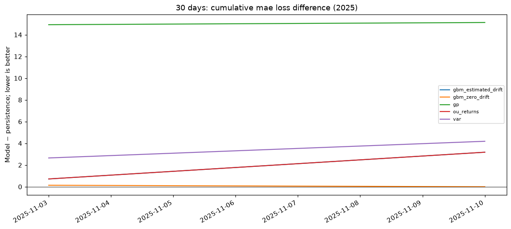
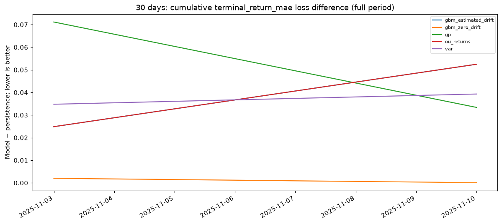
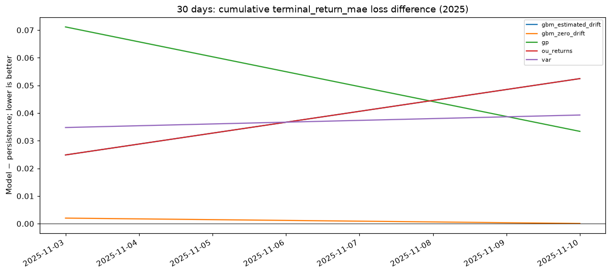
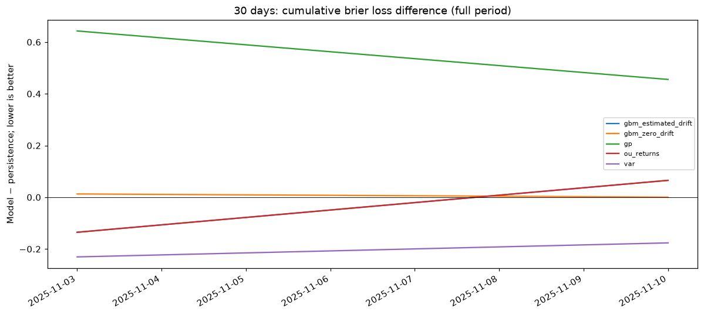
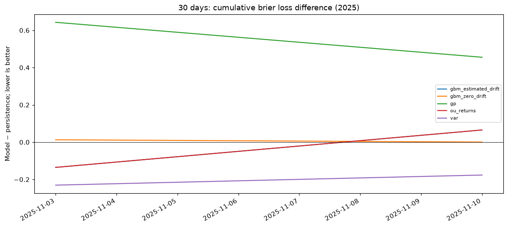
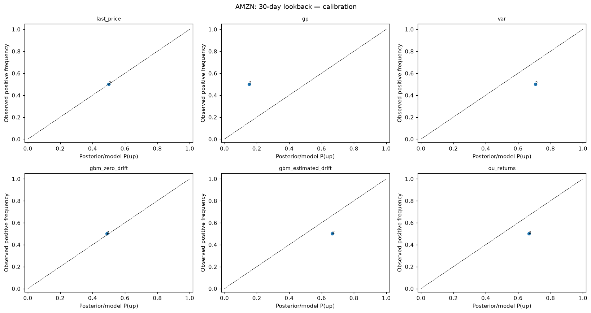
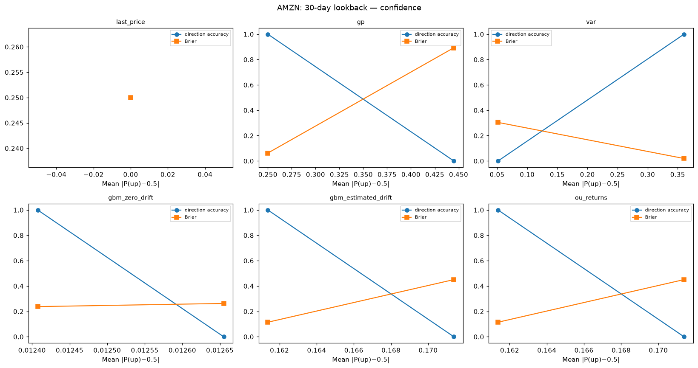
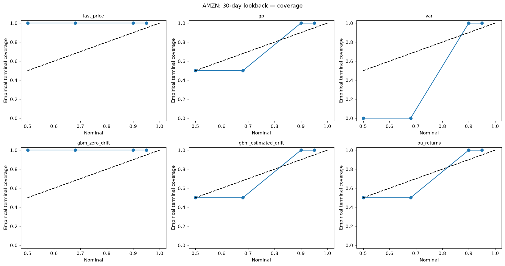
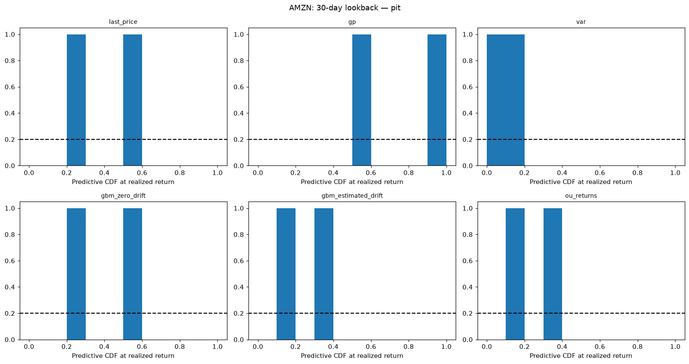
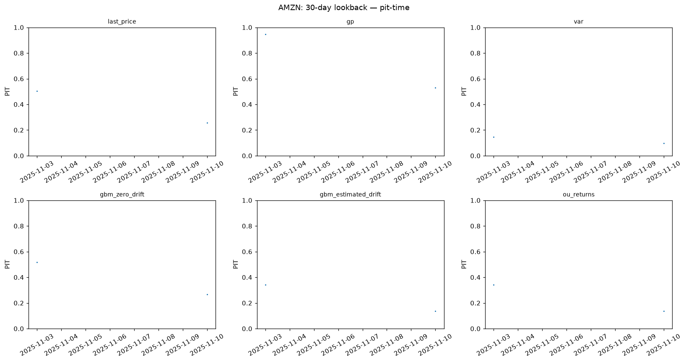
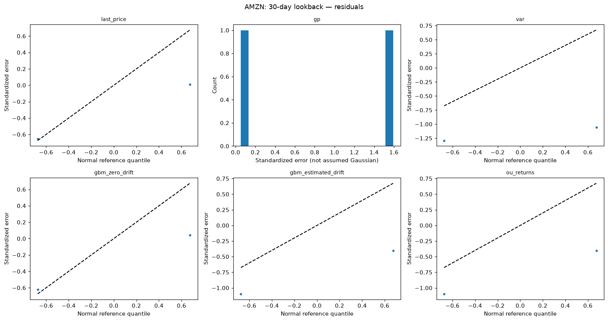
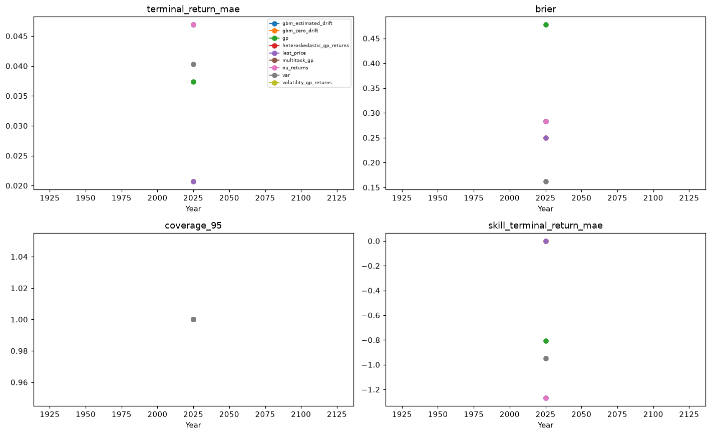
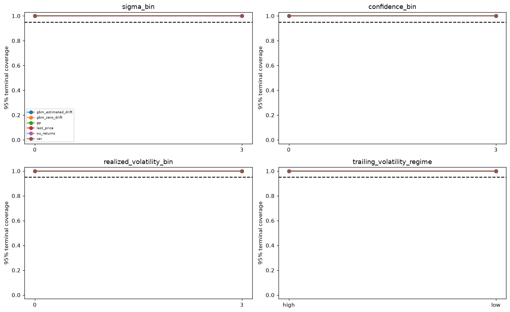
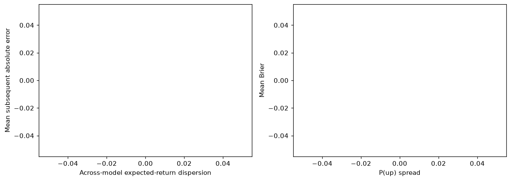